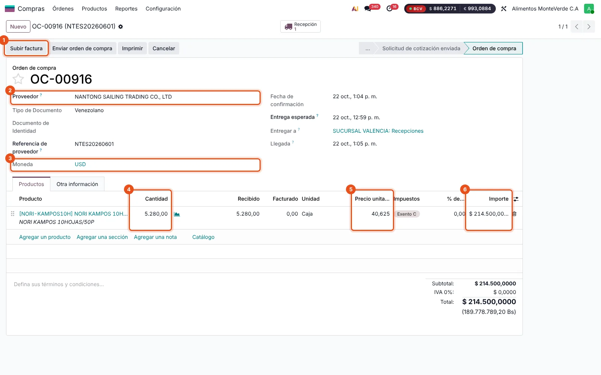
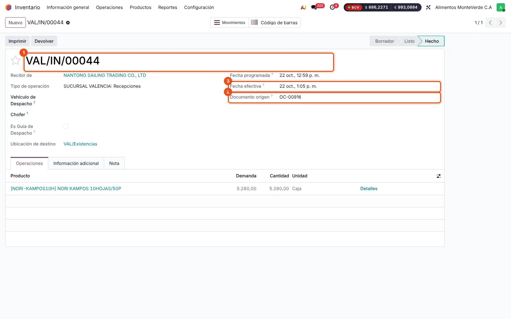
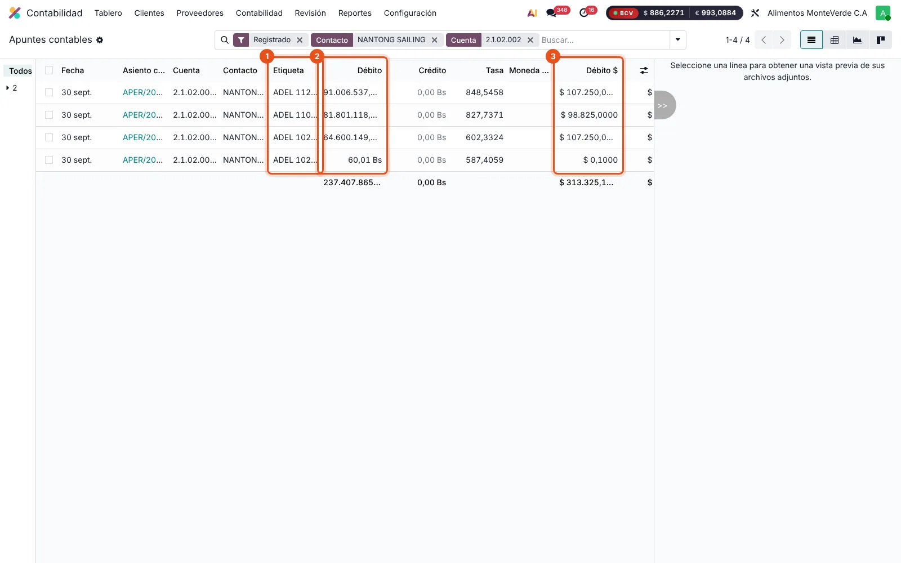
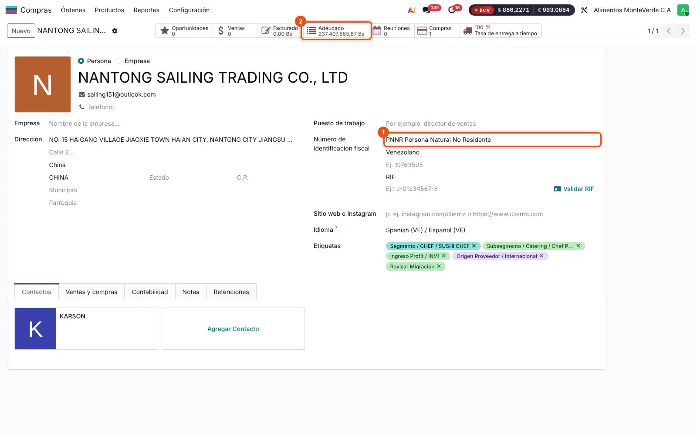
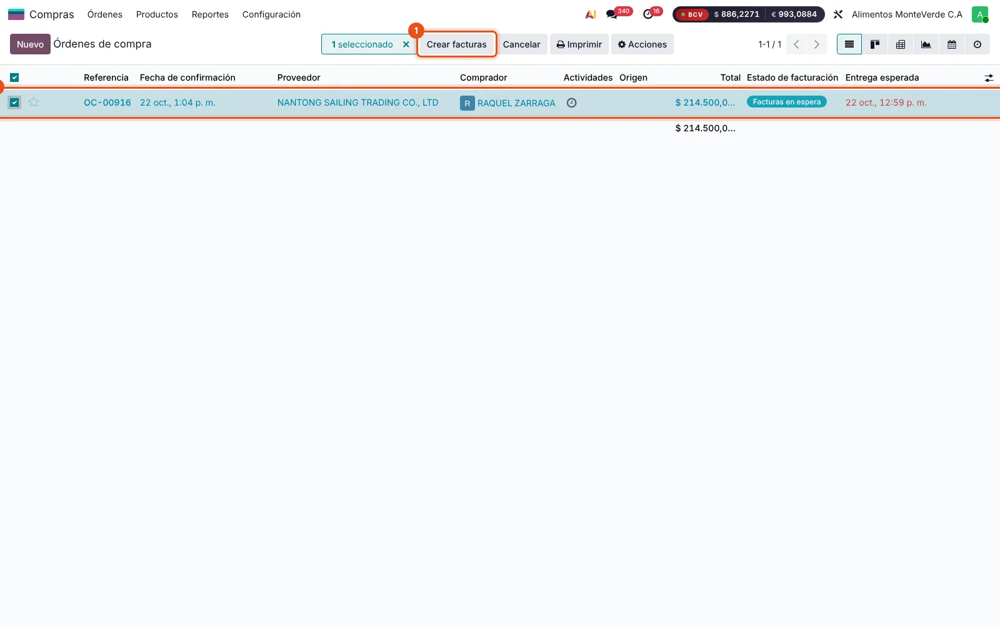
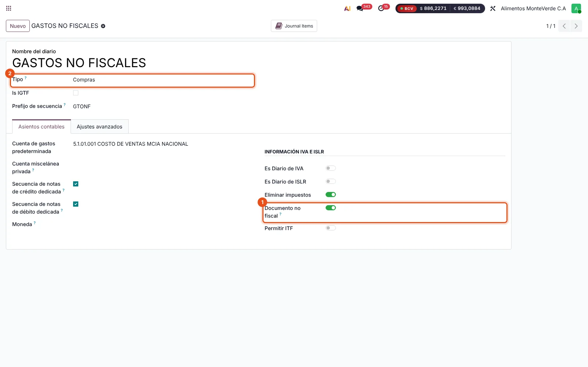
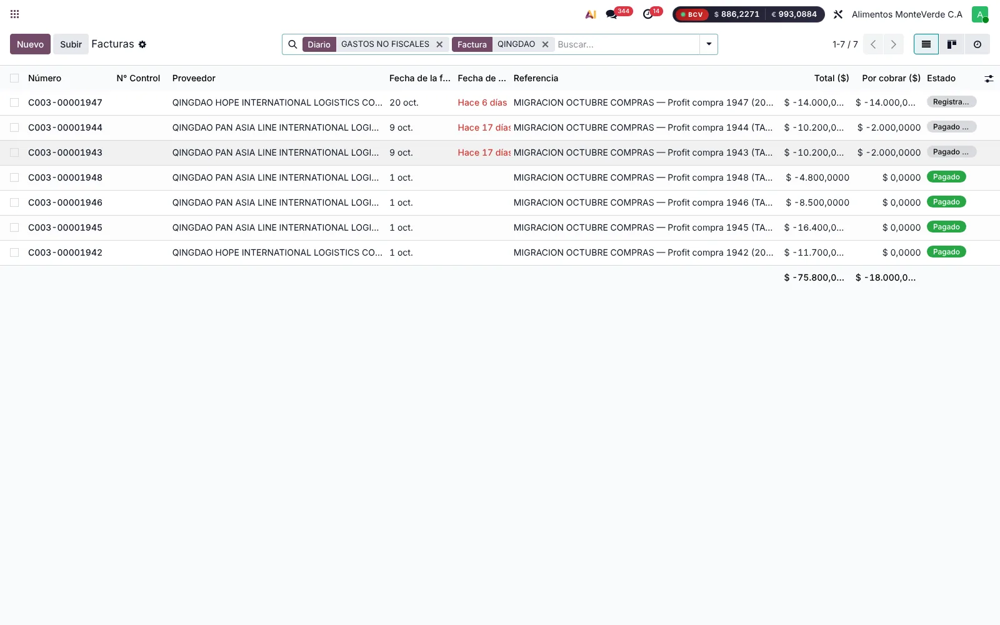
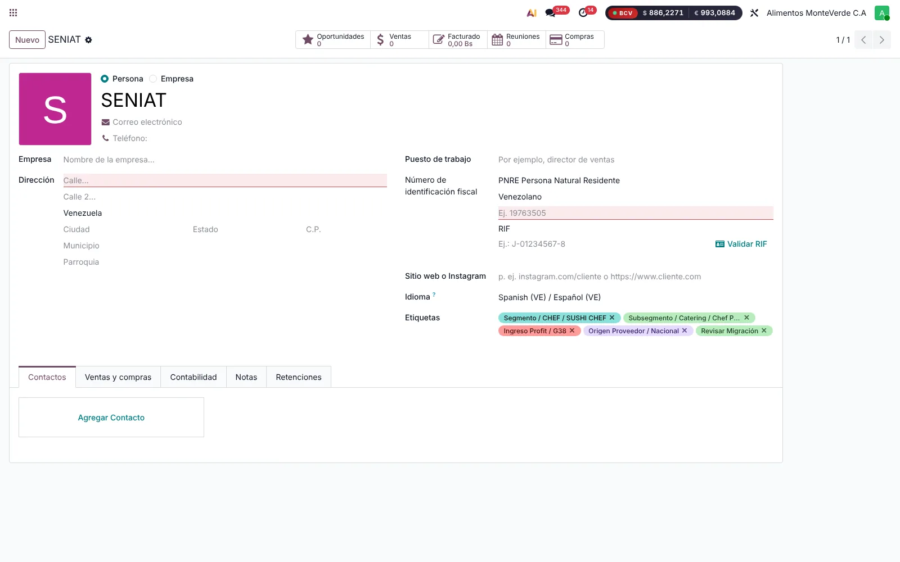
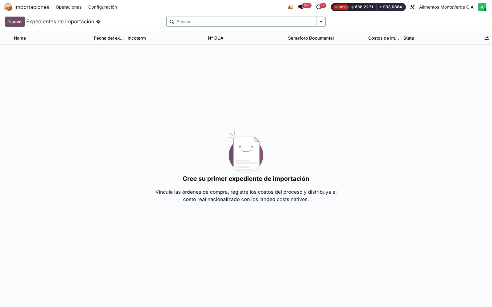
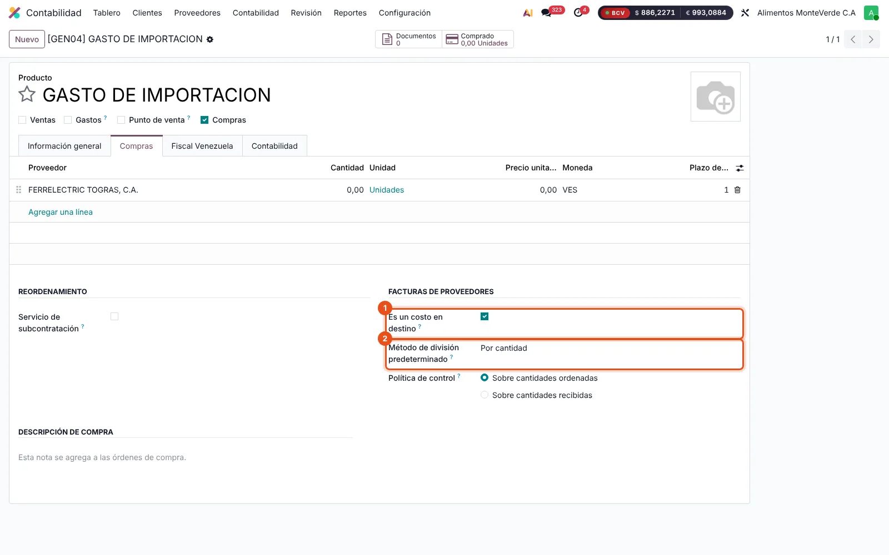

Importaciones: factura del proveedor, anticipos y nacionalización
Cómo registrar la factura del proveedor del exterior por el precio acordado, cruzarla con los anticipos ya pagados y llevar al libro de compras los documentos de la nacionalización. Caso real: NORI, orden OC-00916.
1El caso y los tres documentos
En una importación hay tres documentos distintos y cada uno cumple una función en Odoo. Separarlos evita el saldo pendiente al cruzar los pagos.
| Documento | Para qué sirve | Diario | Libro de compras |
|---|---|---|---|
| Factura del proveedor del exterior | Deuda con el proveedor por el precio acordado. Contra ella se cruzan los anticipos y pagos. | GASTOS NO FISCALES | No |
| Planilla de liquidación (nacionalización) | IVA de importación (crédito fiscal) con los datos de la planilla y el DUA. | FACTURAS PROVEEDORES | Sí, como importación |
| Arancel, tasas, agente y fletes | Gastos que suben el costo del inventario mediante costos en destino. | Según el proveedor | Según el documento |
Ese diario tiene marcado Documento no fiscal: sus facturas se registran, se pagan y se concilian como cualquier otra, pero no llevan número de control ni impuestos y no entran a los libros de compras y ventas. AMV ya lo usa para las facturas de las navieras de China.
2Datos del caso NORI
Orden de compra OC-00916

- Subir factura: crea la factura del proveedor adjuntando su PDF (ver 3.1).
- Proveedor NANTONG SAILING TRADING CO., LTD.
- Moneda USD.
- 5.280 cajas recibidas, 0 facturadas.
- Precio unitario US$ 40,625.
- Total US$ 214.500,00.
Recepción y costo en destino ya registrados


Anticipos pagados a NANTONG
Los pagos al proveedor ya están en Odoo como anticipos en la cuenta 2.1.02.002 CUENTAS POR PAGAR EXTERIOR. Entraron con los saldos iniciales del 30/09/2026.

Contabilidad › Contabilidad › Apuntes contables, filtrado por contacto NANTONG SAILING y cuenta 2.1.02.002.
- Referencia del anticipo en Profit (ADEL).
- Débito en Bs a la tasa del día del pago.
- Débito en US$.
| Anticipo | US$ | Bs | Uso |
|---|---|---|---|
| ADEL 1023 | 107.250,00 | 64.600.149,90 | OC-00916 |
| ADEL 1128 | 107.250,00 | 91.006.537,05 | OC-00916 |
| ADEL 1102 | 98.825,00 | 81.801.118,91 | Otra orden |
| ADEL 1022 | 0,10 | 60,01 | Residuo |
| Total | 313.325,10 | 237.407.865,87 |
ADEL 1023 + ADEL 1128 = US$ 214.500,00, el mismo total de OC-00916. Contabilidad debe confirmar que esos dos anticipos corresponden a esta orden.

- NANTONG está registrado como PNNR Persona Natural No Residente.
- Adeudado 237.407.865,87 Bs: es el total de los anticipos.
3Paso 1 · Factura del proveedor por el precio acordado
3.1 Crear la factura desde la orden de compra
Hay que crearla desde la orden para que quede ligada a la recepción y Odoo actualice el costo del NORI. En Odoo 19 hay dos caminos:
- Desde la lista: Compras › Órdenes › Órdenes de compra, busca
OC-00916, marca la casilla de la fila y pulsa Crear facturas. - Desde el formulario: abre OC-00916 y pulsa Subir factura con el PDF de la factura del proveedor. Crea la misma factura con el PDF adjunto.

- Botón Crear facturas.
- OC-00916 seleccionada, estado de facturación «Facturas en espera».
3.2 Completar y confirmar la factura
La factura se abre en borrador. Antes de confirmar:
- Diario: GASTOS NO FISCALES. Si la factura trae otro diario, cámbialo antes de confirmar.
- Referencia de factura: número de la factura del proveedor. Fecha de factura: la del documento del proveedor.
- Precio unitario: el acordado. La orden trae US$ 40,625 × 5.280 = US$ 214.500,00. Si el precio acordado es otro, se corrige en la línea.
- Expediente de importación: si se creó el expediente (paso 3), selecciónalo.
- Pulsa Confirmar.

- Documento no fiscal activado (junto con Eliminar impuestos).
- Tipo Compras.

Con valuación perpetua, la factura ligada a la orden recalcula el valor de la recepción VAL/IN/00044 con el precio de la factura. Si el precio es el mismo de la orden (US$ 40,625), el costo del NORI no cambia. El costo en destino LC/2026/0118 se mantiene.
4Paso 2 · Cruzar los anticipos con la factura
- En la factura confirmada, al pie, aparece el recuadro Débitos pendientes con los anticipos de NANTONG.
- Pulsa Agregar en ADEL 1023 (US$ 107.250,00) y luego en ADEL 1128 (US$ 107.250,00).
- La factura queda Pagada, sin saldo pendiente. ADEL 1102 y ADEL 1022 siguen disponibles para la factura que les corresponda.
Los anticipos se registraron en Bs a la tasa del día de cada pago (602,3324 y 848,5458), y la factura usa la tasa de su fecha. En US$ cuadra exacto; la diferencia en Bs la registra Odoo con un asiento de diferencia en cambio al conciliar.
No registres un pago nuevo a NANTONG por esta factura: el dinero ya salió y está en los anticipos.
5Paso 3 · Planilla de liquidación de la nacionalización
La planilla de liquidación es el documento que entra al libro de compras como importación, con su IVA de importación (crédito fiscal).
- Contabilidad › Proveedores › Facturas: documento a nombre del contacto SENIAT, diario FACTURAS PROVEEDORES, fecha de la planilla.
- Número de planilla de liquidación y número del DUA en la referencia y en los campos de importación de la localización.
- IVA de importación con el impuesto 16% C, sobre la base imponible que indica la planilla.
- Registra el expediente en Importaciones › Operaciones › Expedientes: Nº DUA, Nº de planilla de liquidación, tasa BCV del DUA, OC-00916, VAL/IN/00044, la factura del proveedor y los costos.


La factura de proveedor muestra los campos Nº de planilla de importación, fecha de la planilla, Nº de expediente y Factura SENIAT solo cuando el proveedor es una empresa PJND (Persona Jurídica No Domiciliada). NANTONG está como PNNR (persona) y SENIAT como PNRE (persona). Antes de registrar la planilla del NORI hay que probar en staging qué contacto y qué campos genera la línea Importación del libro de compras.
6Paso 4 · Arancel, tasas y gastos al costo
- Registra cada gasto con un producto de servicio marcado Es un costo en destino: arancel, tasa por régimen aduanero, ISAEA, agente aduanal, gastos de puerto y transporte.
- Crea un costo en destino nuevo sobre VAL/IN/00044 desde la factura de cada gasto (botón Crear costos en destino), pulsa Compute y Validar. Detalle en el manual «Costos en destino».
- El IVA de importación no va al costo en destino: es crédito fiscal (paso 3).


nks_importaciones con su criterio de distribución: arancel, seguro e ISAEA por costo actual; fletes por peso; agente y puerto en partes iguales.7Resultado y control
| Control | Dónde se ve | Resultado esperado |
|---|---|---|
| Factura NANTONG | Contabilidad › Proveedores › Facturas | US$ 214.500,00, diario GASTOS NO FISCALES, estado Pagada |
| Anticipos | Apuntes contables de NANTONG, cuenta 2.1.02.002 | ADEL 1023 y ADEL 1128 conciliados; ADEL 1102 y ADEL 1022 abiertos |
| Orden de compra | OC-00916 | 5.280 cajas facturadas, sin cantidades por facturar |
| Libro de compras | Libro de compras del período | Solo la planilla de liquidación, como importación |
| Costo del NORI | Producto NORI KAMPOS 10HOJAS/50P | Precio de factura + costos en destino validados |